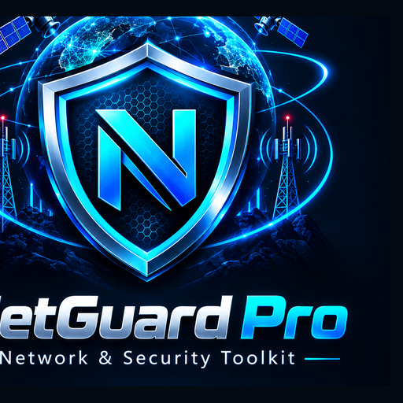

ONE-CLICK START
Easy Install
Windows and Linux packages include a one-click installer/launcher. Mobile includes an installable PWA.

NetGuard Pro is a defensive observability toolkit that brings system telemetry, Wi-Fi visibility, LAN awareness, authorized diagnostics, web security checks, public radio-mast mapping and orbital awareness into one focused desktop interface.
CPU / RAM / Traffic
Wi-Fi Radar
LAN Device Map
Cell Towers & Satellite Awareness
DNS · Traceroute · TLS · Subnet
Web Security · Reports · Logs
Windows and Linux packages include a one-click installer/launcher. Mobile includes an installable PWA.
Resolve DNS, inspect routes, validate TLS endpoints and calculate IPv4/IPv6 subnets.
Map public mast objects and visualize satellite positions from public orbital elements.
Firewall, adapters, connections, headers, certificates and local baseline diagnostics.